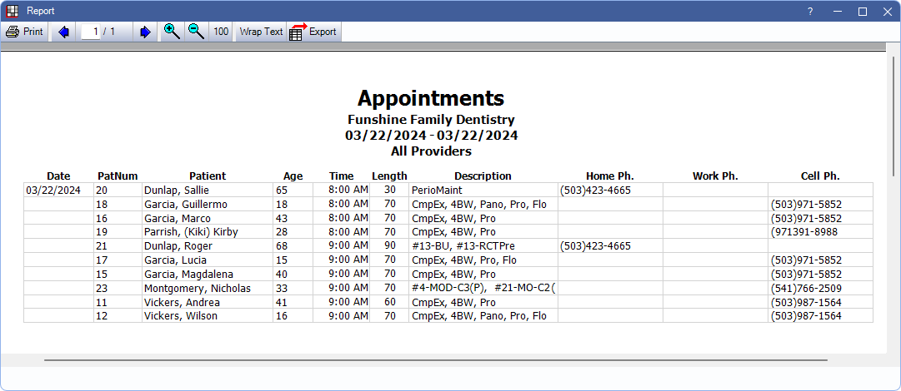

Appointments Report
Generate a list of appointments scheduled for or created in a date range using the Appointment report.
In Standard Reports, in the Lists section, click Appointments.

The Appointments report is a list of all appointments for a date or date range and all or specific providers or clinics. It can also be used to track which appointments made using Web Sched Recall, Web Sched New Patient, Web Sched Existing Patient, or Web Sched ASAP (see Web Sched Feature).
- To control user access to this report, see Report Setup: Security Permissions.
- Another option for Web Sched appointments is the Web Sched Appointments Report.
Filters
Set the report criteria and filters before running the report.
Providers: Highlight the providers to include. Check All to include all listed providers. Filters by the provider or hygienist assigned to appointment.
- To exclude hidden providers from the report, manually select visible providers from the list.
Clinics: Only available when Clinics are enabled in Show FeaturesHighlight clinics to include in the report. Check All (includes hidden) to include all clinics, including those marked hidden.
- Filters by clinic assigned to the appointment.
- If user is restricted to specific clinics, only accessible clinics are listed. When checking All (includes hidden), results include all clinics user has access to, including those marked hidden; results do not include clinics user is restricted from or appointments not assigned to a clinic.
Date Range: Enter the date range of appointments to include.
- From / To: Enter the start and end date of appointments to include in the report. To run for a single day, enter the same date in both boxes.
- Today: Click to change the From and To dates to the current date.
- Tomorrow: Click to change the From and To dates to tomorrow's date.
- Appointment Date: Applies the selected date range to the appointment date. Date column displays the scheduled appointment date; The date created is included when selecting this option. Appointments are sorted by appointment date.
- Appointment Date Created: Applies the selected date range to the date the appointment was created. Includes bothDateCreated and Apt Date columns. Appointments are sorted by date created.
- Show "Note" Appointments: Includes notes for patients that have been created from the Patient Appointments window.
Web Sched Appointments Only: If using Web Sched, track which appointments were scheduled using each service by filtering the report. Selecting any of these options results in only appointments that meet the criteria to be included in the report. All other appointments (e.g., non-Web Sched) are excluded.
- Show Recall Appointments: Show appointments scheduled using Web Sched Recall.
- Show New Patient Appointments: Show appointments scheduled using Web Sched New Patient.
- Show ASAP Appointments: Show appointments scheduled using Web Sched ASAP.
- Show Existing Patient Appointments: Show appointments scheduled using Web Sched Existing Patient.
Report Preview
After setting the report filters, click OK to generate a print preview of the report. Below is an example of the report and explanation of the report columns. For a description of toolbar buttons, see Complex Report System.
Results are grouped by clinic and date.
- When Appointment Date behavior is selected, results are sorted by Time and the following columns appear:
- Date: Appointment date.
- When Appointment Date Created behavior is selected, results are sorted by Patient and the following columns appear:
- DateCreated: Date appointment was originally created. This generally differs from the date the appointment is scheduled.
- Apt Date: The scheduled appointment date.
- PatNum: Unique Patient Number. See Edit Patient Information.
- Patient: Patient last name, preferred name, and first name.
- Age: Patient age in years.
- Time: Scheduled time of appointment.
- Length: Length of appointment in minutes.
- Description: Procedure abbreviations of any procedures attached to the appointment.
- Home Ph.: Patient's home phone number.
- Work Ph.: Patient's work phone number.
- Cell Ph.: Patient's wireless phone number.